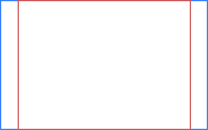

Vous débutez dans le développement web ? Vous vous demandez comment réaliser un design qui s'adapte à l'écran de vos visiteurs ? Vous êtes tombés au bon endroit. ;) Je vais vous expliquer tout au long de ce tutoriel comment créer un design dit « extensible ». Mais avant de commencer à coder quoi que ce soit, quelques explications s'imposent.
Pour créer un bon design, il faut penser à plusieurs choses, notamment aux différents affichages possibles. En effet, en fonction du matériel et des configurations du visiteur, l'affichage d'un site peut varier. Une des différences importantes est tout simplement la taille de l'écran et plus précisément sa définition.
Qu'est-ce que la définition d'écran ?
La définition d'un écran est le nombre de pixels affichés en largeur et en hauteur. Une définition de 1024x768 indiquera donc que l'écran affiche 1024 pixels en largeur et 768 en hauteur. La définition d'écran est paramétrable dans les configurations de l'ordinateur.
Les définitions actuelles
Il y a quelques années, les écrans les plus vendus étaient de format 4/3 et utilisaient une définition de 800x600 ou de 1024x768. Ces écrans étaient relativement carrés. Depuis peu, le format d'écran tend à changer vers le 16/10, qui donne visuellement un écran plus large, plus rectangle. De nos jours, les écrans vendus dans le commerce sont donc quasiment tous beaucoup plus large que haut. Cela dit, la définition la plus utilisée pour le moment reste le 1024x768 (4/3), bien qu'en baisse, suivi par le 1280x800 (16/10) qui arrive juste après. Les deux formats les plus utilisés actuellement sont donc totalement différents. Enfin, la définition 1366x768 n'est pour le moment pas parmi les plus courantes, mais en forte progression et semble bien partie pour atteindre les premières d'ici quelques années.
Ce que ça implique pour le design
Quel problème peut engendrer le fait que deux formats d'écran totalement différents soient les plus utilisés ? Le fait de passer d'un format plutôt carré à un format rectangle implique tout simplement de nouvelles marges. Voici la différence en image :

Le cadre orange correspond au format 1024x768 ; le bleu au 1280x800. On voit bien les marges à gauche et à droite qui font la différence entre les deux formats. C'est une chose à ne pas oublier lors de la création du design, notamment lors du choix de la taille d'un design fixe.
Le design fixe
Faire un design extensible est très bien, mais savoir quelle est la différence avec un design fixe est encore mieux. ;)
Définition
Un design fixe est un design qui ne bouge pas (évident, non ^^ ?). Plus concrètement, il s'agit d'un design composé d'éléments de taille fixe (donnée en pixels le plus souvent). De ce fait, que l'écran du visiteur mesure 20 cm ou 2 m de largeur ne modifiera en rien l'emplacement des éléments les uns par rapport aux autres. Votre site aura toujours la même taille (en pixels) et la même apparence (il ne se déformera pas).
Avantages et inconvénients
Un design fixe est plus simple et moins long à réaliser qu'un design extensible. La raison est qu'avec un design fixe, on ne s'occupe pas de la façon dont va se comporter notre design. On sait qu'il aura toujours la même forme.
Bah, alors pourquoi faire un design extensible ? Un design fixe c'est très bien, non ? :euh:
Oui c'est vrai, un design fixe n'est pas un « mauvais design », il s'agit juste d'un type de design. Certains sites professionnels sont conçus de manière statique. Par exemple commentcamarche.net, pour n'en citer qu'un.
Mais un design fixe n'a pas que des avantages. Le défaut principal vient justement du fait qu'il garde toujours la même taille. En effet, il faut faire en sorte que son site soit visible correctement aussi bien par les petites définitions que par les très grandes. Avec un design fixe, il faut donc baser la taille de son site sur les petites définitions pour éviter qu'il ne se trouve plus grand que l'écran d'un visiteur (et ajoute une barre de défilement horizontale par la même occasion, ce qu'il faut éviter le plus possible).
Le problème, c'est qu'un design qui prend toute la place sur une définition de 1024x768 paraîtra tout petit sur une très grande définition. Eh oui, car quand on dit qu'un design fixe garde la même taille, il s'agit d'une taille en pixels. Les grandes définitions affichant beaucoup plus de pixels, il y aura donc beaucoup d'espace vide autour du corps de la page. Imaginez la tête du visiteur fier d'avoir acheté un nouvel écran 24 pouces arrivant sur votre site et voyant qu'il prend à peine la moitié de l'écran. o_O Et on en revient au problème des deux formats d'écrans différents. Les écrans étant maintenant beaucoup plus larges, il se forme d'autant plus de marge si le design est basé sur le format 4/3.
Prenons l'exemple du site officiel de Ubuntu qui utilise un design fixe. Voici le rendu sur deux définitions différentes :
ubuntu.com avec une définition de 800x600 (à gauche) et 1280x960 (à droite)
Le corps du site garde toujours la même taille (soit 976 px, ici), mais comme les deux définitions n'affichent pas le même nombre de pixels, alors les affichages sont différents. On peut voir ici qu'avec une définition de 800x600, on ne voit pas toute la largeur de la page (on est obligé d'utiliser la barre de défilement horizontale), tandis qu'avec la définition 1280x960, le corps de la page ne prend pas toute la place, il se crée donc des marges. Et ce sont ici deux définitions pour formats 4/3, imaginez si l'on passe d'un format 4/3 à un format 16/10. ;)
Le principal atout d'un design extensible, c'est justement de pouvoir s'adapter à l'écran de l'utilisateur et utiliser au maximum l'espace disponible. Cela évite d'avoir de grandes marges inutilisées.
Ce n'est pas beau, ça ? :D
Le design extensible
Définition
Un design extensible est, contrairement à un design fixe, variable en fonction de la définition d'écran des visiteurs. Plus clairement, cela veut dire que la taille du design s'adaptera à l'écran. Il s'étirera et se rétrécira automatiquement.
Avantages et inconvénients
Un gros avantage est comme je l'ai dit plus haut d'éviter d'avoir de grandes marges sur les côtés. Le design s'adapte à la définition d'écran et prend ainsi toute la place disponible (si tant est qu'on l'ait décidé ainsi ;) ). Grâce à cela, le design est beaucoup plus portable car il n'est pas créé pour une seule définition, mais pour toutes (dans une certaine mesure).
Un design extensible est par contre plus long et (un peu) plus complexe à réaliser parce qu'il faut envisager toutes les possibilités. Il faut prendre en compte le comportement du design sous différentes configurations pour être sûr qu'il n'y ait pas de gros problèmes d'affichage dans certains cas.
Voilà pour la théorie, nous allons (enfin) pouvoir passer à la pratique. ;)
Nous allons donc créer un design extensible simple, pas à pas, en abordant les principales techniques. Je passerai très rapidement sur le code qui ne concerne que l'esthétique (bordures, couleurs, etc.) : vous êtes normalement capables de le faire sans problème. ;) Notez que ce qui est abordé dans ce tutoriel peut être utilisé sans problème pour un design fixe en faisant quelques modifications (en ajoutant des tailles fixes, notamment).
Je ne m'attarde pas plus sur ce code car il ne pose pas de difficulté particulière. ;)
Enregistrez la page sous le nom que vous voulez et affichez-la dans votre navigateur. Pour les utilisateurs de Notepad++, cliquez sur l'onglet de votre page HTML puis sur Execution > Launch in [navigateur]. Vous devriez voir apparaître une page toute moche, c'est normal. ^^
Passons maintenant à la partie qui nous intéresse le plus, la feuille de style. Créez une nouvelle page CSS et enregistrez-la sous le nom style.cssdans le même dossier que la page HTML. Vous pouvez d'ores et déjà ouvrir votre éditeur sur votre page CSS car, comme vous l'avez compris, nous allons remplir cette feuille de style tout au long de ce tutoriel.
Nous sommes maintenant prêts pour créer notre design. À vos claviers !
Centrer un bloc
Comme nous l'avons vu plus haut sur l'aperçu du design, le titre principal est centré, contient une image de fond et possède une bordure. Pour bien visualiser une chose importante, nous allons commencer par ajouter la bordure. Pour rappel :
h1
{
border: 1px solid black;
}
En faisant apparaître les modifications dans votre navigateur, vous devriez remarquer un comportement spécifique aux éléments de type bloc : l'élément prend toute la place disponible en largeur. Ce comportement peut paraître tout à fait évident ou sans intérêt particulier, mais il est pourtant essentiel dans la création de designs extensibles. En effet, en prenant toute la largeur disponible, les blocs sont alors extensibles par défaut. Nous verrons un cas concret un peu plus loin.
Revenons à nos moutons. Notre titre doit maintenant être centré, nous allons donc centrer le contenu de l'élément <h1> avec la propriété text-align.
text-align: center;
Jusque-là, rien de compliqué. ;) Dans le rendu final, les bordures gauche et droite ne sont pas sur les bords de la page, le cadre est beaucoup plus petit en largeur. La première idée qui vient en tête est de donner une taille au bloc <h1>. C'est en effet la meilleure solution ici.
width: 500px;
Eh ! Mais ce n'est plus du tout centré, le titre est maintenant tout à gauche ! o_O
Eh oui. Le texte est toujours bien centré dans l'élément <h1>, mais le bloc, lui, n'est pas centré dans son élément parent (ici, il s'agit de <body>).
Pour cela, nous allons utiliser les marges externes et plus spécialement les marges automatiques. De plus, profitons-en pour ajouter des marges en haut et en bas. Comme ceci :
margin: 20px auto;
M@teo21 parle déjà de ces marges automatiques dans son cours XHTML/CSS, mais un rappel ne fait pas de mal, surtout que les marges automatiques sont très utiles pour les designs extensibles. ;)
Le titre est maintenant complètement centré ; vous pouvez maintenant améliorer tout ça en ajoutant des marges internes, une hauteur, ainsi qu'une police et une couleur pour le texte.
/* pour l'esthétique */
font-family: "Comic Sans MS", Arial, Times, sans-serif;
color: #ececec;
height: 45px;
padding: 10px;
Passons maintenant à l'image de fond. Il s'agit d'un simple dégradé vertical de tons de bleu. Nous allons utiliser cette image :
degrade.png (Clic droit + « Enregistrer la cible du lien sous… » pour télécharger l'image)
Ce n'est pas un peu trop petit, comme image ? :o
Non, ce n'est pas un problème, c'est même un avantage. Quand vous affichez une page dans votre navigateur, toutes les données de cette page (fichiers HTML, CSS, images, etc.) sont téléchargées sur votre ordinateur. Il faut alors toujours réduire au maximum le poids des fichiers de son site pour que le téléchargement (et donc l'affichage) soit rapide même chez les visiteurs ayant une connexion de faible débit. Pour les images, il faut donc les rendre les plus petites possible sans que cela ne dégrade l'affichage du design.
Dans notre cas, l'image est un dégradé vertical. L'image ne change pas horizontalement, alors autant n'utiliser que le minimum nécessaire, soit une image de 1 px en largeur et d'une hauteur choisie pour le dégradé. Pour l'affichage, il n'y a qu'à faire en sorte que l'image se répète horizontalement et le tour est joué.
Le lien de l'image donné ici implique que vous ayez appelé votre image degrade.png et que vous l'ayez mise dans un dossier nommé images.
Maintenant posez-vous cette question : que se passerait-il si, pour une raison ou une autre, la hauteur du <h1> se trouvait plus grande que l'image ?
Réponse :
Il se créerait un espace blanc sous l'image de fond.
Pour éviter ce problème, il existe une solution toute simple : ajouter une couleur de fond de la même couleur que le bas de l'image. Ainsi, si l'image ne couvre pas tout le bloc, la couleur prendra le relais sans que cela se voie.
Dans notre cas, la couleur à utiliser est #8fceff (notation hexadécimale) :
background-color: #8fceff;
Et voilà, nous avons terminé le titre. Voici le code CSS complet :
h1
{
border: 1px solid black;
text-align: center;
width: 500px;
margin: 20px auto;
/* pour l'image de fond */
background-image: url("images/degrade.png");
background-repeat: repeat-x;
background-color: #8fceff;
/* pour l'esthétique */
font-family: "Comic Sans MS", Arial, Times, sans-serif;
color: #ececec;
height: 45px;
padding: 10px;
}
Aligner deux blocs
Nous allons maintenant mettre en forme la plus grosse partie de notre page, le menu et le corps. Sachez qu'il existe différentes façons d'aligner des blocs, nous en verrons deux qui peuvent convenir à notre design.
L'utilisation des flottants pour aligner deux blocs est sans aucun doute la méthode la plus connue et très certainement la plus utilisée. Nous allons donc logiquement commencer par cette méthode. ;)
Les flottants
Occupons-nous tout d'abord du menu et comme pour le titre, commençons par ajouter la bordure. Cela permet de bien visualiser la taille et la forme de l'élément, de mieux comprendre son comportement et ainsi d'éviter des erreurs.
#menu
{
border: 1px solid black;
}
Le menu doit être aligné à gauche du bloc #contenu. Nous utiliserons donc pour cette première méthode les flottants.
#menu
{
border: 1px solid black;
float: left;
}
Nous voulons que le menu soit à gauche, alors on le fait flotter à gauche (logique ^^ ).
Bon, le menu est bien à gauche mais on ne peut pas dire que c'est encore bien terrible, tout ça. Le contenu de la page est complètement collé au menu : pour éviter ça, nous pouvons ajouter une marge externe à droite.
Et voilà, nous avons terminé le menu. Je vous laisse regarder le code complet pour les petites améliorations (couleur de fond, alignement du texte, etc.). ;)
Passons maintenant au corps de la page, le div #contenu. Comme d'habitude, commençons par ajouter la bordure.
#contenu
{
border: 1px solid black;
}
Comme vous devez le voir, le menu se trouve « dans » le div #contenu : cela est tout à fait normal et dû au flottant. Seulement, nous voulons séparer le menu du div #contenu. Comment pensez-vous pouvoir faire ça ?
Avec une marge à gauche sur le div ? :euh:
Eh non ! ;) Techniquement, c'est vrai que cela peut fonctionner mais il faudrait pour ça définir une marge externe à gauche plus grande que la taille du menu (la largeur du menu + sa marge externe gauche éventuelle + la marge souhaitée entre le menu et l'autre div). Cela est dû au flottant : le menu étant flottant, il est sorti du flux, c'est-à-dire qu'il ne réagit plus avec les éléments autour de lui, il ne prend plus de place dans la page. C'est en quelque sorte comme s'il était positionné au-dessus du reste. En bref, ce n'est vraiment pas la meilleure solution.
Il existe une solution plus propre et surtout beaucoup plus simple : la propriété overflow.
Et devant vos yeux ébahis, le div #contenu se réduit exactement comme on le voulait. ^^
En ajoutant overflow: auto;, nous avons en fait demandé au navigateur de gérer automatiquement l'affichage de l'élément. Le navigateur essaie alors d'afficher l'élément dans son intégralité de la façon qu'il peut. Dans le cas présent, le menu (ses marges externes comprises) masque une partie du div #contenu, le navigateur choisit donc de réduire l'élément de façon à ce qu'on le voie en entier. Dans d'autres configurations, le navigateur aurait pu choisir d'ajouter des barres de défilement.
Souvenez-vous : je vous disais plus haut que le comportement des blocs (c'est-à-dire le fait qu'ils prennent par défaut toute la largeur disponible) était essentiel pour la création de designs extensibles. Nous avons ici un cas concret, le div prend toute la largeur disponible automatiquement.
Et voilà, vous pouvez ajouter une couleur de fond et le div est terminé. ;)
Pour l'anecdote, les flottants n'ont pas été créés pour cette utilisation. À l'origine, la propriété float avait pour but de permettre de déplacer des images ou autres éléments d'un côté de son conteneur tout en laissant le texte à côté et sous l'élément flottant. De plus, l'utilisation des flottants est certes très pratique, mais cette méthode est aussi celle qui connaît le plus de bugs d'affichage. Toutefois, cela ne signifie pas pour autant qu'il ne faut pas utiliser les flottants pour positionner des blocs, mais simplement que ce n'est peut-être pas toujours la meilleure solution. Plus d'informations sur Alsacréations : Float : le grand bluff ?
Un tableau sans tableau ?
Au lieu des flottants, il est possible d'utiliser la propriété display afin d'aligner des blocs. En effet, display: inline-block;, par exemple, permet d'utiliser le comportement des éléments en ligne pour le placement, tout en laissant la faculté d'utiliser des propriétés de blocs. En gros, cette valeur de la propriété display permet d'avoir des éléments mi-bloc, mi-inline.
Nous verrons ici une autre solution, display: table-cell;. Comme vous devez le savoir, l'utilisation des tableaux pour le placement des éléments est déconseillée d'un point de vue sémantique. Un tableau doit accueillir des données tabulaires, on est bien d'accord. ;) Cependant, rien ne nous interdit de considérer nos éléments comme des tableaux sans qu'ils en soient vraiment en XHTML. Grâce à la propriété display, il est possible de définir des éléments quelconques comme de véritables tableaux et, par la même occasion, permettre d'utiliser les propriétés associées (gestion des cellules, etc.).
Nous allons donc dans notre cas ajouter un <div> qui contiendra le menu et le bloc #contenu. Comme ceci :
<!-- ... -->
<div id="table">
<div id="menu">
<h3>Menu</h3>
<ul>
<li><a href="accueil.html">Accueil</a></li>
<li><a href="infos.html">Informations</a></li>
<li><a href="contact.html">Contact</a></li>
</ul>
</div>
<div id="contenu">
<h2>Présentation du site</h2>
<p>
Bienvenue sur mon premier design extensible !<br/>
Ce site est un essai de design extensible, c'est-à-dire que le corps du site s'adaptera à votre écran. Vous ne risquez donc pas de voir le site en tout petit avec de grandes marges autour.
</p>
</div>
</div>
<!-- ... -->
Ce div #table fera office de tableau et les blocs #menu et #contenu seront les cellules. Les modifications du CSS ne sont pas très nombreuses. Le tableau est défini avec display: table; et les cellules avec display: table-cell;.
Et voilà, ce n'est pas plus compliqué que ça. ;) Cette méthode fonctionne très bien et peut être très utile pour garder deux colonnes à la même hauteur. En effet, si vous ajoutez du contenu dans l'un des deux blocs, la hauteur de l'autre s'agrandira de la même façon. Notez cependant que display: table; et display: table-cell; ne sont supportés qu'à partir de IE 8. Pour la suite, je considérerai que vous utilisez la méthode des flottants.
Passons maintenant à l'élément <p> du div #contenu où nous retrouvons une situation similaire au titre. Il serait plus esthétique que le bloc <p> soit plus petit et centré afin qu'il ne soit pas collé à son conteneur. Nous pourrions alors faire exactement comme pour le titre, c'est-à-dire donner une largeur au bloc et le centrer avec les marges automatiques. Cette méthode fonctionnerait mais n'est clairement pas adaptée ici. Le fait de donner une largeur fixe empêcherait le bloc de s'agrandir, il ne serait donc plus extensible. Le bloc resterait bien centré mais aurait toujours la même taille, ce qui peut être gênant sur les grandes définitions. De plus, si l'on donnait une largeur trop grande à ce bloc, il risquerait de dépasser sur des définitions trop petites. Nous devons donc garder l'extensibilité en ne spécifiant pas de taille. Comme nous voulons juste que le bloc ne soit pas collé à son conteneur, nous pouvons simplement ajouter des marges externes sur les côtés.
Et voilà, ce n'est pas beau, ça ? ^^ Je passe rapidement sur le titre qui ne pose pas de problème particulier.
#contenu h2
{
margin: 10px 0 10px 20px;
}
Il ne reste plus qu'à centrer le pied de page, ce qui est tout simple à faire. Comme le bloc conteneur prend toute la largeur disponible, il suffit de centrer le texte qu'il contient.
#pied_de_page
{
text-align: center;
}
Le design est maintenant presque terminé.
Il n'est pas terminé ? Pourtant il ressemble exactement à l'aperçu, non ? :o
Oui, le design est bien terminé en terme d'affichage « normal », il reste simplement quelques subtilités. ;)
Les subtilités
Pour comprendre les problèmes qui peuvent subsister, posez-vous cette question : que se passerait-il si un visiteur ayant une très grande définition venait sur mon site ? Et à l'inverse, que se passerait-il avec les très petites définitions ?
Pour vous donner une idée de l'affichage, faites un zoom arrière le plus grand possible sur votre navigateur pour le premier cas, et réduisez la largeur de la fenêtre pour l'autre.
Comme vous pouvez le remarquer, l'affichage n'est pas terrible sur une très petite largeur : le texte chevauche le cadre, ça semble complètement désorganisé.
En revanche, l'affichage sur une très grande largeur n'est pas désorganisé mais complètement étiré. Il serait bon d'éviter d'avoir des lignes de texte qui n'en finissent plus. ^^
Et comment on peut éviter ça ? :euh:
En donnant des limites. ;) Grâce aux propriétés min-width et max-width, on peut préciser au navigateur la largeur minimum et maximum d'un élément.
Pour notre design, nous allons donc donner une taille minimum à #contenu. Après quelques tests, voici une valeur qui convient :
min-width: 160px;
L'affichage du <div> ne risque maintenant plus d'être tout écrasé.
Donnons maintenant une taille maximum. Ajoutez cette ligne à #contenu et testez le résultat en modifiant le zoom :
max-width: 1000px;
Bah, ça ne marche pas… o_O Le div ne dépasse pas la limite donnée, mais il se décale et n'est plus centré.
Eh oui, et c'est tout à fait normal. ;) En attribuant max-width à #contenu, seul ce <div> est concerné. Si l'affichage dépasse 1000 px de largeur, alors le <div> arrêtera de s'agrandir mais pas le reste du design. Et par la même occasion, cela créera un décalage.
La solution est d'attribuer max-width à body. Comme ça, tout le design est concerné par la limite. Par contre, il ne faut pas oublier de centrer <body> avec des marges automatiques (si vous voulez que votre design reste centré, bien sûr). Vous savez maintenant faire ça. ;)
body
{
max-width: 1200px;
margin: 0 auto;
}
Maintenant que les marges gauche et droite sont automatiques, le design se centrera tout seul si la largeur de la définition d'écran dépasse la valeur de max-width. Seulement, si la largeur affichée est inférieure, il n'y aura tout simplement pas de marge. Pour résoudre ce problème, il suffit d'ajouter une marge externe à gauche pour #menu et une marge externe à droite pour #contenu.
Et voilà, nous avons entièrement terminé notre design.
Il nous reste une dernière chose à aborder que vous devez absolument connaître, l'utilisation des pourcentages.
Le point sur les pourcentages
Pour la création d'un design extensible, il est possible de donner des tailles en pourcentage aux éléments. La création de designs extensibles est souvent associée, à tort, exclusivement aux valeurs en pourcentages. De plus, leur utilisation est souvent proposée sur les forums. Cependant, il convient de bien connaître leur fonctionnement avant de les utiliser.
Une valeur en pourcentage est par définition relative. Une largeur de 90 % voudra donc dire que la largeur du bloc doit être 10 % plus petite que son bloc parent. Le bloc parent doit alors avoir une largeur connue, car sinon 90 % d'un nombre inconnu ne donnera rien. La largeur du bloc parent est généralement connue (définie par l'utilisateur ou calculée par le navigateur), cependant ce n'est pas toujours le cas de la hauteur. Admettons que l'on souhaite qu'un <div> présent dans l'élément <body> prenne toute la hauteur du cadre d'affichage du navigateur. Ce simple code semblerait fonctionner :
div
{
height: 100%;
}
Pourtant, la hauteur du <div> ne change pas. En effet, l'élément parent <body> n'a pas de hauteur définie, le navigateur ne peut donc pas appliquer 100 % de sa hauteur à l'élément enfant <div>. Pour que cela fonctionne, il faut donc définir la hauteur de <body>. Seulement, si l'on donne une hauteur en pourcentage à <body>, son élément parent <html> doit alors aussi avoir une hauteur connue. Une hauteur en pourcentage appliquée à <html> sera calculée à partir de la hauteur du cadre d'affichage des pages web du navigateur. Ainsi, le code suivant fonctionne correctement :
html, body, div
{
height: 100%;
}
L'élément <div> prend bien 100 % de la hauteur de <body>, qui à son tour prend 100 % de la hauteur de <html>. Ce dernier prenant 100 % de la hauteur du cadre d'affichage du navigateur.
Cet exemple est relativement complexe mais il permet de bien se rendre compte du fonctionnement des pourcentages. De plus, les pourcentages peuvent provoquer un comportement non désiré (un rétrécissement ou un agrandissement beaucoup trop important, une marge qui s'étire, etc.). Il est aussi difficile d'obtenir une grande précision dans l'affichage.
Pour toutes ces raisons, l'utilisation des pourcentages est fortement déconseillée pour créer la globalité d'un design extensible. Créer un design extensible ne se résume pas à changer les valeurs en pixel par des valeurs en pourcentage. L'utilisation des pourcentages n'est pas pour autant une mauvaise chose et peut être utile dans certains cas mais implique de bien connaître le comportement que cela occasionne. Je vous conseille donc vivement d'utiliser le principe du comportement par défaut des blocs dans la mesure du possible. ;)
Le tutoriel est terminé, j'espère qu'il vous a plu. :) Vous savez maintenant les bases de la création d'un design extensible. Le design présenté dans ce tutoriel a été testé et approuvé sur les versions Windows des navigateurs suivants :
Firefox 3.6.13;
Internet Explorer 8;
Safari 5.0.3;
Chrome 8.0;
Opéra 11.01.
N'oubliez pas qu'en cas de problème, vous pouvez aller demander de l'aide sur le forum XHTML/CSS.
{kind=link}
{kind=link}
{kind=link}
{kind=link}
{kind=link}
{kind=link}